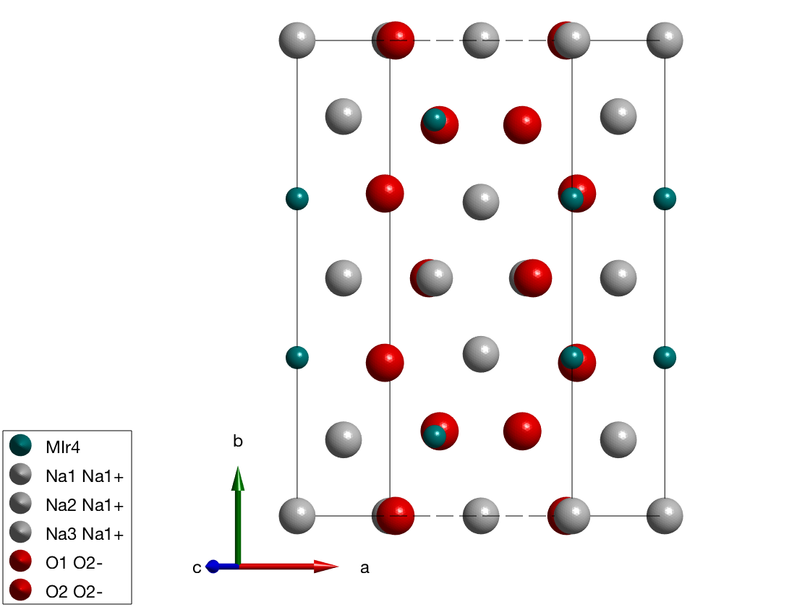
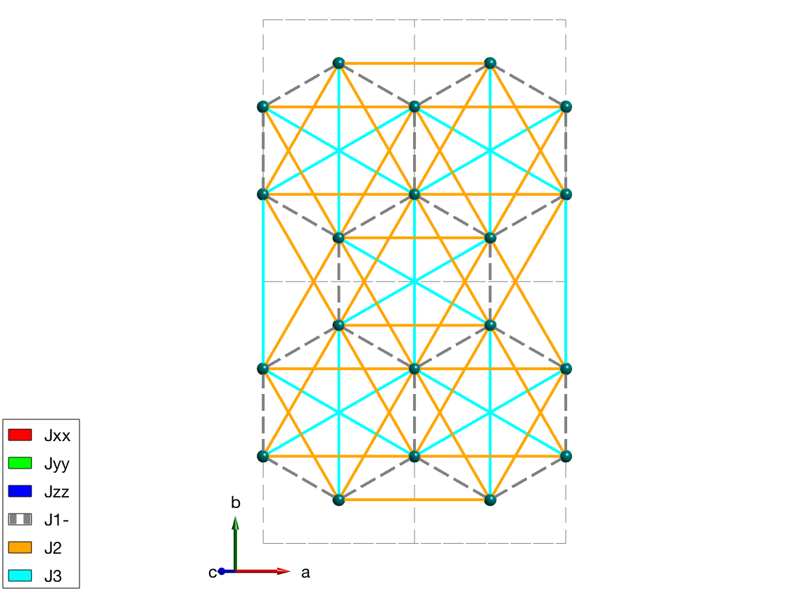
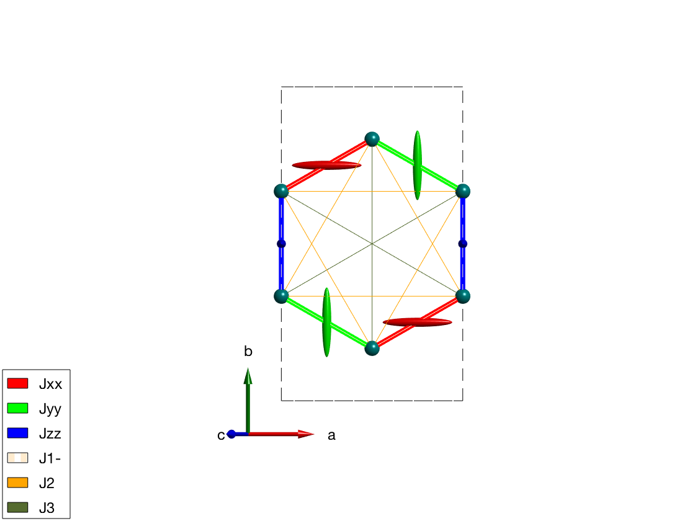
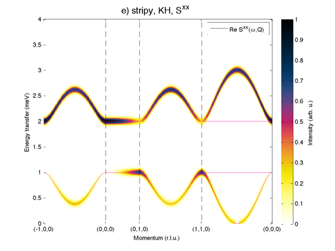
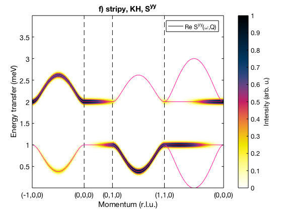
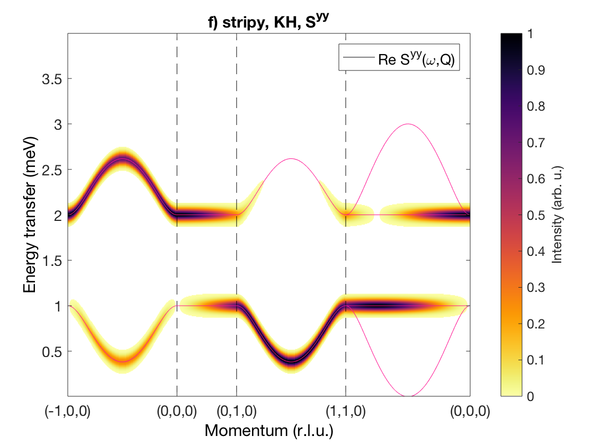
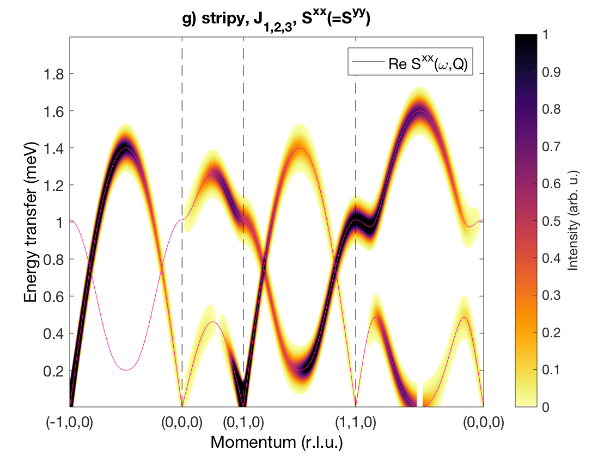
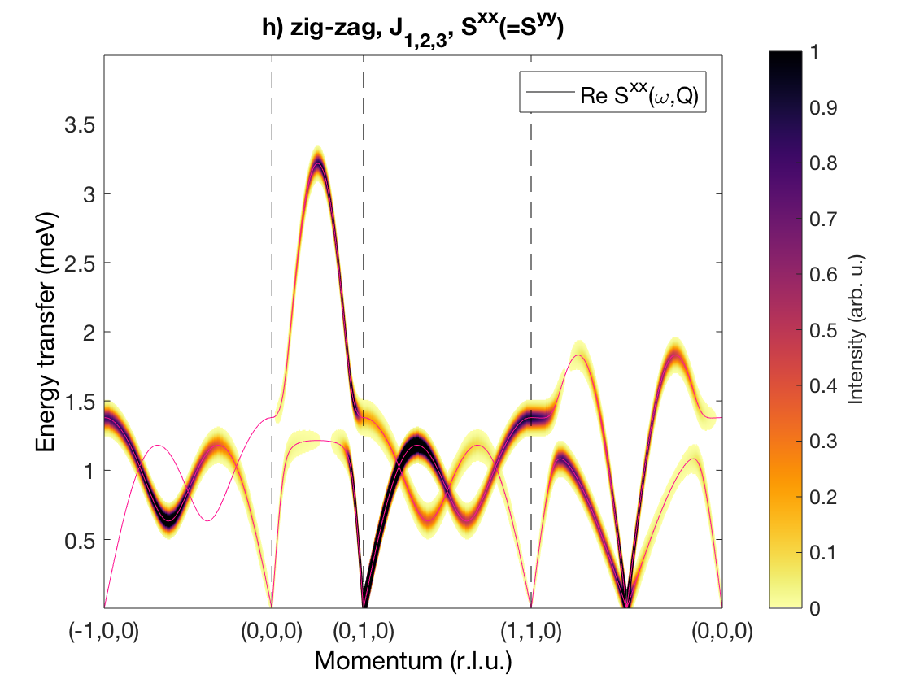
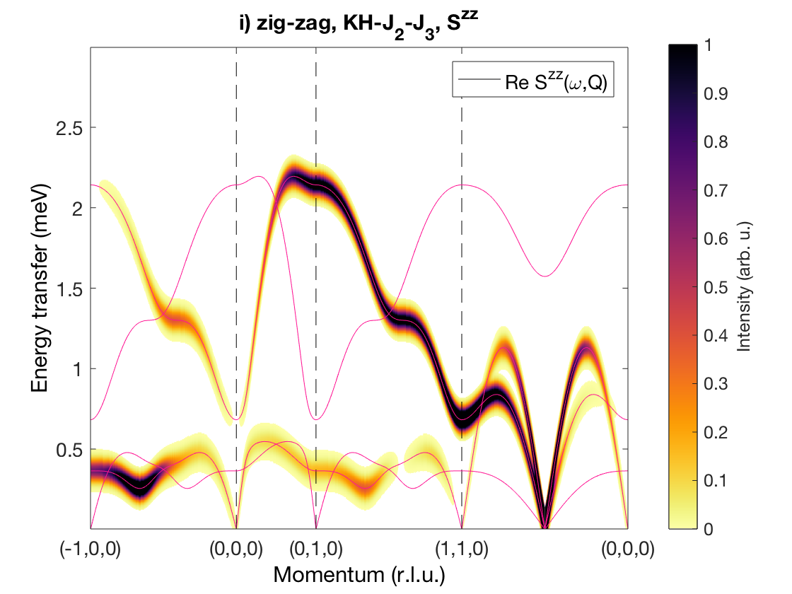
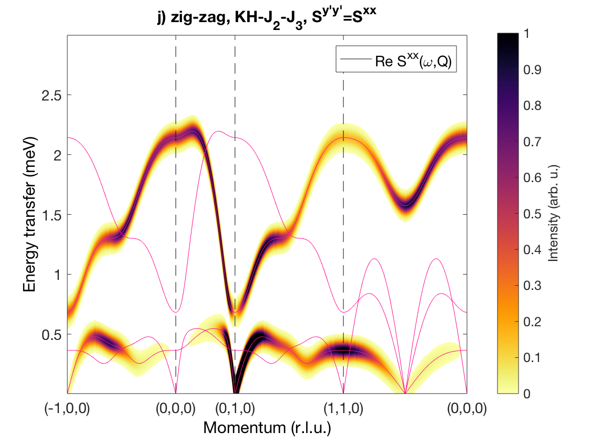

Spin wave spectrum of the honeycomb lattice Na2IrO3
we reproduce the spin wave calculation of the paper S. K. Choi, et al. PRL, 108(12), 127204 (2012), [[http://link.aps.org/doi/10.1103/PhysRevLett.108.127204]].
Contents
Crystal structure
We define the crystal structure using the space group C2/m, and taking the crystallographic parameters at 300 K (parameters are only slightly different at 5 K) and we add not only the magnetic Ir4+ ions with effective spin quantum number of 1/2 but also the non-magnetic atoms for plotting the structure.
nairo = spinw; nairo.genlattice('lat_const',[5.427 9.395 5.614],'angled',[90 109.037 90],'spgr','C 2/m') nairo.addatom('label','MIr4','r',[1/2; 0.167; 0],'S',1/2,'color','DarkCyan'); nairo.addatom('r',[0 1/2 1/2;0 0 0.340; 0 1/2 1/2],'S',[0 0 0],'label',{'Na1 Na1+' 'Na2 Na1+' 'Na3 Na1+'},'color',{'lightGray' 'lightGray' 'lightGray'}); nairo.addatom('r',[0.748 0.711; 0.178 0; 0.789 0.204],'S',[0 0],'label',{'O1 O2-', 'O2 O2-'},'color',{'r' 'r'}); plot(nairo,'baseShift',[-2;0;0]) swplot.zoom(1.3) % We generate all bonds up to 8 Angstrom length. nairo.gencoupling('maxDistance',8);
Magnetic Hamiltonian
We define the three anisotropic exchange interactions and Heisenberg exchange J1, J2 and J3 and assign them according to the paper. We assign a constant 1 meV for all exchange matrix, that we will change later for every model. J1 is plotted with dashed line to see both J1 and the kitaev coupling on the plot ('-' at the end of the matrix label will be plotted with dashed line). The Jxx and Jyy Kitaev terms are assigned to symmetry equivalent bonds, but they don't transform according to the space group symmetry. Thus we use a second option 'subIdx' to subselect from the symmetry equivalent bonds. In this case SpinW won't apply the symmetry transformation on exchange matrices on these bonds, it can be also forced setting the 'sym' option false in the spinw.addcoupling() function.
% Kitaev term nairo.addmatrix('label','Jxx','value',1,'color','r'); nairo.addmatrix('label','Jyy','value',1,'color','g'); nairo.addmatrix('label','Jzz','value',1,'color','b'); % Heisenberg terms nairo.addmatrix('label','J1-','value',1,'color','gray'); nairo.addmatrix('label','J2','value',1,'color','orange'); nairo.addmatrix('label','J3','value',1,'color','cyan'); % add J1, J2 and J3 and JK couplings nairo.addcoupling('mat','J1-','bond',[1 2]); nairo.addcoupling('mat','J2','bond',[3 4]); nairo.addcoupling('mat','J3','bond',[7 8]); % Plot all couplings. plot(nairo,'range',[2 2 0.5],'atomMode','mag','cellMode','inside',... 'atomLegend',false,'cellcolor','gray','bondMode','line','bondLinewidth0',2) swplot.zoom(1.4)
snapnow % add JJxx, Jyy and Jzz couplings nairo.addcoupling('mat','Jxx','bond',1,'subidx',[3 4]); nairo.addcoupling('mat','Jyy','bond',1,'subidx',[1 2]); nairo.addcoupling('mat','Jzz','bond',2); % Plot Kitaev couplings only. plot(nairo,'range',[2 2 0.5],'atomMode','mag','cellMode','inside',... 'atomLegend',false,'cellcolor','gray','bondMode','line','bondLinewidth0',2) swplot.zoom(1.4)
Warning: By subselecting equivalent bonds, the symmetry of the corresponding bond(s) are reduced to P1! Warning: By subselecting equivalent bonds, the symmetry of the corresponding bond(s) are reduced to P1!
Plot Kitaev term
nairo.addmatrix('label','Jxx','value',diag([1 0 0]),'color','r') nairo.addmatrix('label','Jyy','value',diag([0 1 0]),'color','g') nairo.addmatrix('label','Jzz','value',diag([0 0 1]),'color','b') nairo.addmatrix('label','J1-','value',0); nairo.addmatrix('label','J2','value', 0); nairo.addmatrix('label','J3','value', 0); plot(nairo,'range',[1 1 1/2],'atomMode','mag','bondRadius1',0.15,'bondMode','line',... 'bondLineWidth','lin','bondLinewidth0',4,'atomLegend',false)
Q scans
We define a list of Q points, linear scans will be claculated between them with 200 points per line.
Qp{1} = [ -1; 0; 0];
Qp{2} = [ 0; 0; 0];
Qp{3} = [ 0; 1; 0];
Qp{4} = [ 1; 1; 0];
Qp{5} = [1/2; 1/2; 0];
Qp{6} = [ 0; 0; 0];
Qp{7} = 500;
Spin wave spectrum
We simulate every setting in the supplementary paper and denote each case with the figure plot index on Fig. S3. We create a Jfun() inline function that creates all exchange matrices from the scalar values. This can then directly be stored in sw.matrix.mat field.
Jfun = @(x)cat(3,diag([-x(4) 0 0]),diag([0 -x(4) 0]),diag([0 0 -x(4)]),...
eye(3)*x(1),eye(3)*x(2),eye(3)*x(3));
Fig. S3(d) stripy order
We create stripy order, where energy per spin is -0.2913 meV. The spins are pointing along the c-axis.
J1 = 1; J2 = 0; J3 = 0; JK = 1.33; nairo.matrix.mat = Jfun([J1 J2 J3 JK]); nairo.genmagstr('mode','func','func',@gm_planar,'x0',[[1/2 3/2 1/2 3/2]*pi 0 0 0 pi/2 0]); specD = nairo.spinwave(Qp); specD = sw_neutron(specD); specD = sw_egrid(specD,'component','Sxx','Evect',linspace(0,4,1001)); figure sw_plotspec(specD,'mode','color','dE',0.1,'axLim',[0 1]); sw_plotspec(specD,'mode','disp','dashed',true,'colorbar',false,'legend',... false,'title',false,'sortMode',true,'colormap',[255 20 147]); title('e) stripy, KH, S^{xx}','fontsize',15)
Fig. S3(e-f) stripy order
Here we have only J1 and Kitaev exchange. The magnetic ground state is stripy and parallel to the c-axis. The energy per spin is -0.375 meV.
J1 = 1; J2 = 0; J3 = 0; JK = 2; nairo.matrix.mat = Jfun([J1 J2 J3 JK]); nairo.genmagstr('mode','func','func',@gm_planar,'x0',[[1/2 3/2 1/2 3/2]*pi 0 0 0 pi/2 0]); specEF = nairo.spinwave(Qp,'hermit',false); specEF = sw_neutron(specEF); specEF = sw_egrid(specEF,'component','Sxx','evect',linspace(0,4,501)); figure sw_plotspec(specEF,'mode','color','dE',0.1,'axLim',[0 1]); sw_plotspec(specEF,'mode','disp','dashed',true,'colorbar',false,'legend',... false,'title',false,'sortMode',true,'colormap',[255 20 147]); title('e) stripy, KH, S^{xx}','fontsize',15) specEF = sw_egrid(specEF,'component','Syy','evect',linspace(0,4,501)); figure sw_plotspec(specEF,'mode','color','dE',0.1,'axLim',[0 1]); sw_plotspec(specEF,'mode','disp','dashed',true,'colorbar',false,'legend',... false,'title',false,'sortMode',true,'colormap',[255 20 147]); title('f) stripy, KH, S^{yy}','fontsize',15) 
Fig. S3(g) stripy order
Stripy order again along c-axis.
J1 = 1; J2 = 0.26; J3 = -0.2; JK = 0; nairo.matrix.mat = Jfun([J1 J2 J3 JK]); nairo.genmagstr('mode','func','func',@gm_planar,'x0',[[1/2 3/2 1/2 3/2]*pi 0 0 0 pi/2 0]); specG = nairo.spinwave(Qp,'hermit',false); specG = sw_neutron(specG); specG = sw_egrid(specG,'component','Sxx','evect',linspace(0,2,501)); figure sw_plotspec(specG,'mode','color','dE',0.1,'axLim',[0 1]); sw_plotspec(specG,'mode','disp','dashed',true,'colorbar',false,'legend',... false,'title',false,'sortMode',true,'colormap',[255 20 147]); title('g) stripy, J_{1,2,3}, S^{xx}(=S^{yy})','fontsize',15)
Fig. S3(h) zig-zag order
Zig-zag order along the b-axis.
J1 = 1; J2 = 0.78; J3 = 0.9; JK = 0; nairo.matrix.mat = Jfun([J1 J2 J3 JK]); nairo.genmagstr('mode','func','func',@gm_planar,'x0',[[0 1 1 0]*pi 0 0 0 pi/2 0]); specH = nairo.spinwave(Qp,'hermit',false); specH = sw_neutron(specH,'pol',false); specH = sw_egrid(specH,'component','Sxx','evect',linspace(0,4,501)); figure sw_plotspec(specH,'mode','color','dE',0.1,'axLim',[0 1]); sw_plotspec(specH,'mode','disp','dashed',true,'colorbar',false,'legend',... false,'title',false,'sortMode',true,'colormap',[255 20 147]); title('h) zig-zag, J_{1,2,3}, S^{xx}(=S^{yy})','fontsize',15)
Warning: Eigenvectors of defective eigenvalues cannot be orthogonalised at some q-point!
Fig. S3(i-j) zig-zag order
Magnetic structure, where spins are pointing along the b-axis. In the paper the Sy'y' direction is the correlation function component perpendicular to the magnetic moment direction, that is Sxx for S||b moments.
J1 = 1; J2 = 0.23; J3 = 0.51; JK = 1.33; nairo.matrix.mat = Jfun([J1 J2 J3 JK]); nairo.genmagstr('mode','func','func',@gm_planar,'x0',[[0 1 1 0]*pi 0 0 0 pi/2 0]); specIJ = nairo.spinwave(Qp,'hermit',false); specIJ = sw_neutron(specIJ); figure specIJ = sw_egrid(specIJ,'component','Szz','evect',linspace(0,3,501)); sw_plotspec(specIJ,'mode','color','dE',0.1,'axLim',[0 1]); sw_plotspec(specIJ,'mode','disp','dashed',true,'colorbar',false,'legend',... false,'title',false,'sortMode',true,'colormap',[255 20 147]); title('i) zig-zag, KH-J_2-J_3, S^{zz}','fontsize',15) figure specIJ = sw_egrid(specIJ,'component','Sxx','evect',linspace(0,3,501)); sw_plotspec(specIJ,'mode','color','dE',0.1,'axLim',[0 1]); sw_plotspec(specIJ,'mode','disp','dashed',true,'colorbar',false,'legend',... false,'title',false,'sortMode',true,'colormap',[255 20 147]); title('j) zig-zag, KH-J_2-J_3, S^{y''y''}=S^{xx}','fontsize',15) 
Written by Sandor Toth 16-Jun-2014, 06-Feb-2017